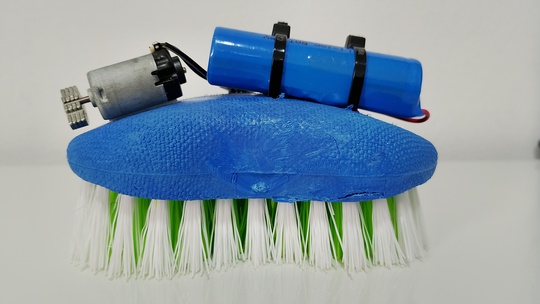
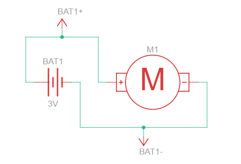
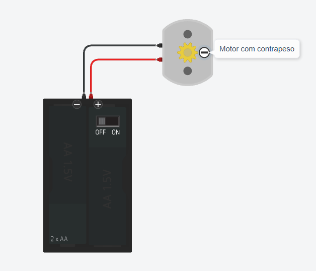
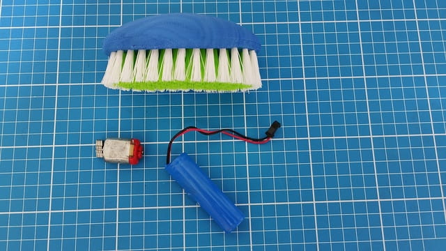
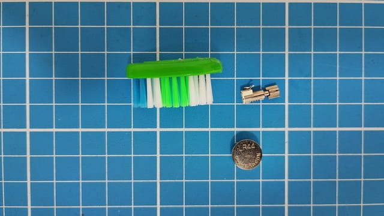
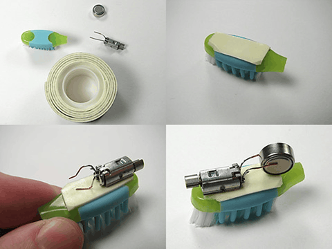

Robô Escova
Prepare-se para dar uma missão especial àquela escova de limpeza esquecida na lavanderia! Neste projeto, vamos transformar uma simples escova em um robô vibratório capaz de se movimentar sozinho. E o melhor: sem programação, sem Arduino e sem precisar recorrer ao lado sombrio da tecnologia!
A ideia é reaproveitar um motor DC com contrapeso, uma escova de limpeza e algumas pilhas para criar um pequeno robô que se movimenta por vibração. É um projeto de robótica livre que mostra como princípios simples da eletrônica e da mecânica podem gerar resultados surpreendentes.


Como funciona o Robô Escova?
O segredo deste projeto está na vibração! Diferentemente de um carrinho robótico convencional, que utiliza rodas para se movimentar, o Robô Escova aproveita a vibração produzida por um motor elétrico para deslocar sua própria estrutura.
O motor com contrapeso

O motor DC utilizado neste projeto possui um pequeno peso preso ao eixo, chamado de contrapeso excêntrico. Quando o motor começa a girar, esse peso provoca um desequilíbrio no eixo, produzindo vibrações que são transmitidas diretamente para o corpo da escova.
É o mesmo princípio utilizado nos motores vibratórios de celulares e controles de videogame. Uma pequena peça girando fora do centro é suficiente para fazer toda a estrutura vibrar!
A lógica do movimento
O funcionamento do Robô Escova é simples:
- As pilhas fornecem energia elétrica para o motor DC.
- Ao receber energia, o motor começa a girar.
- O contrapeso instalado no eixo provoca uma vibração contínua.
- Essa vibração é transmitida para o corpo da escova e suas cerdas.
- As cerdas entram em contato com a superfície, transformando parte da vibração em pequenos deslocamentos.
- Como resultado, o Robô Escova começa a se movimentar de maneira aparentemente aleatória.
⚠️ Atenção: O comportamento do robô depende de fatores como a posição do motor, a distribuição do peso e o contato das cerdas com a superfície.
Circuito elétrico



Lista de materiais
Para tirar esse projeto do papel, você não vai precisar invadir nenhum laboratório secreto. Basta fazer uma expedição rápida pela lavanderia e pela gaveta de eletrônicos aposentados para reunir o seguinte arsenal:
- 1 escova de limpeza (de preferência com cerdas firmes, pronta para mudar de profissão)
- 1 motor DC com contrapeso (pode ser resgatado daquele joystick antigo que não funciona mais)
- 2 pilhas AA com suporte
- 1 chave liga/desliga (opcional, mas ajuda bastante se você não quiser correr atrás do robô para tirar as pilhas)

Dica Extra: A versão "Mini" (Robô Escovinha) 🪥⚡
Para essa missão em escala reduzida, basta trocar a lista acima por:
- 1 cabeça de escova de dentes (vale aquela velha que já ia para o lixo, basta cortar o cabo)
- 1 micromotor vibratório (aqueles bem pequenininhos, encontrados em celulares antigos)
- 1 bateria botão LR44 (aquela redondinha e gordinha de 1,5V, fácil de achar em relógios, calculadoras ou lojas de conveniência)
- Fita dupla face (para colar tudo no lugar e segurar a bateria sem precisar de suporte)
O resultado é um "robô-inseto" ultrarrápido que cabe até no bolso e adora apostar corrida em cima da mesa!

Montagem
Versão Grande: Montando o Robô Escova
Agora que você já reuniu seu arsenal, é hora de dar vida ao gigante da lavanderia. Siga os passos:
- Pegue a escova de limpeza e escolha a parte de cima (as costas dela) para ser a base onde tudo vai ficar apoiado. Garanta que a superfície esteja limpa e seca para que nada descole durante a corrida.
- Fixe o motor DC com contrapeso na parte de cima da escova usando fita dupla face resistente ou cola quente. Dica de ouro: Deixe o eixo com o contrapeso livre para girar sem bater na escova e tente centralizar o motor o máximo possível para o robô não tombar.
- Prenda o suporte das 2 pilhas AA na escova (também com dupla face ou cola quente) para distribuir bem o peso. Agora, conecte os fios do suporte de pilhas aos terminais do motor. Se você estiver usando a chave liga/desliga, instale-a no meio de um dos fios para ter um interruptor.
- Coloque as pilhas no suporte (ou acione a chave), apoie o Robô Escovão em uma superfície lisa e veja ele ganhar vida própria!
Versão Mini: Montando o Robô Escovinha 🪥
Se você escolheu o desafio em escala reduzida, a montagem é super-rápida e não precisa de solda!
- Pegue a escova de dentes e corte o cabo, deixando apenas a cabeça com as cerdas. Olho no equilíbrio: Escolha uma escova com cerdas bem alinhadas, que consiga ficar "em pé" sozinha na mesa sem tombar para os lados.
- Cole um pedaço de fita dupla face nas costas da cabeça da escova. Ela vai servir tanto para segurar o motor quanto para manter os fios no lugar.
- Pressione o micromotor vibratório (retirado do celular) sobre a fita dupla face. Assim como no irmão maior, alinhe o motor bem no centro e deixe a pontinha giratória livre para vibrar à vontade.
- Descasque um pedacinho da ponta dos dois fios do motor. Encoste um dos fios na parte de baixo da bateria botão (LR44) e pressione contra a própria fita dupla face da escova para fixar. Para ligar o robô, basta encostar o segundo fio na parte de cima da bateria e prender com um pedacinho de fita adesiva comum. Soltou o fio? Ele desliga!

💡 Dica de Mestre para os dois modelos
Se o seu robô ficar andando só em círculos ou tombando muito rápido, mude o peso de lugar! Arrastar a pilha ou a bateria um pouquinho mais para frente ou para trás muda completamente o centro de gravidade e a direção do passeio.
O Desafio Final: Faxina Pesada ou Corrida no Labirinto? 🏆🏁
Agora que seus robôs já estão vibrando pela bancada, é hora de colocar a engenharia à prova! Como você pode conferir no vídeo deste projeto, cada versão tem um talento especial:
- Missão Faxina (Robô Escovão): Com seu tamanho maior e cerdas firmes, o irmão mais velho é o candidato perfeito para dar uma volta pela sala ou pela bancada fazendo uma "limpeza autônoma" e imprevisível.
- Grande Prêmio das Escovinhas (Robô Escovinha): Já os pequenos velocistas nasceram para competir! Experimente colocar dois Robôs Escovinhas lado a lado para ver quem chega primeiro ao final da mesa — ou melhor ainda, crie uma pista cheia de obstáculos.